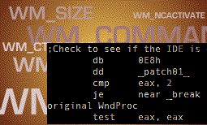

VB6 ASM SSubTimer Full Source (39K)
VB6 ASM SSubTimer Full Source (39K)
 VB6 ASM SSubTmr6 Binary (15K)
VB6 ASM SSubTmr6 Binary (15K)
 25 Apr 2004
25 Apr 2004
First Posted
 Subclassing and Hooking with Machine Code Thunks
Subclassing and Hooking with Machine Code Thunks
 Subclassing Without The Crashes
Subclassing Without The Crashes

SSubTimer - ASM Thunk Version
The SSubTimer component launched on this site in 1998 has been used extensively to solve two of the difficulties associated with subclassing Window messages in Visual Basic: allowing subclassing code to be encapsulated so that independent subclassers do not negatively interact with each other and abstracting an application from low-level underlying details of installing and removing the callback procedure function.
However, the use of Visual Basic code to run the callback meant that it was still possible to crash the IDE during debugging. This article provides a binary compatible implementation of the original SSubTimer which uses an ASM Thunk and includes IDE detection which means even better stability.
About SSubTimer ASM Version
Full details of the design of SSubTimer, and how it is used can be found in the article Subclassing without the crashes. This version does not change the interface, but removes the module previously used to allow the WndProc callback with dynamically injected machine code.
The thunking code is heavily based on the work of Paul Caton, who has published a series of extremely good code samples at Planet Source Code using this technique (an earlier version of his Subclasser and Hook code is also available at this site). The only problem encountered with that subclasser was it was only possible to install a single subclass per Window: if two separate classes both attempted to install a subclass on the same Window (for example, two instances of a class which provide an owner-draw implementation for a button on the same form) then the original Window Procedure was trashed.
In this version, Marzo Sette Torres Jr has brought together the thunking techniques from Paul Caton's code with the logic implemented in SSubTimer to provide the full solution to the problem.
Using It
The version of SSubTmr6.DLL provided here is 100% binary compatible with the previous instance. Therefore you can simply install this version on your machine and register it and all code and controls from the site that use SSubTimer (which is most of them!) will be automatically upgraded to use the new version.
You can also add the subclassing code directly into a project, and it is easier than before. All you need is the interface in ISubclass and then to paste the code from GSubclass into a new module in your project called "GSubclass" (GSubclass is a global class in the DLL; in a project it will just be a module). That's it! And you shouldn't have any IDE debugging problems either.
Note: the new version uses Ebmode for IDE detection. This may impact you if you start a compiled application when you have the VB IDE running in debug mode.
Conclusion
This article provides an updated version of SSubTimer which provides all of the benefits of the original implementation with a greatly crash-resistance when debugging in the IDE.